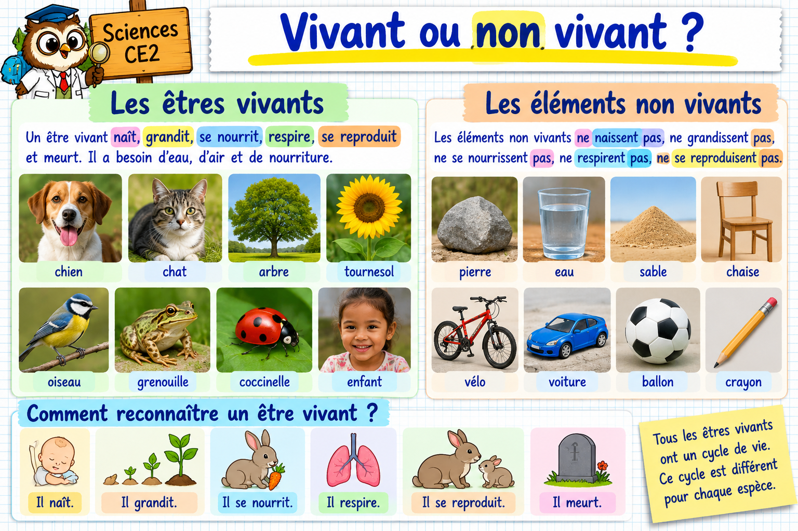

À toi de jouer !
10 exercices interactifs. Observe, réponds et vérifie avant de continuer.
Pour l’exercice de classement : tu peux glisser les images avec la souris, ou toucher une image puis toucher sa colonne sur une tablette.

10 exercices interactifs. Observe, réponds et vérifie avant de continuer.
Pour l’exercice de classement : tu peux glisser les images avec la souris, ou toucher une image puis toucher sa colonne sur une tablette.